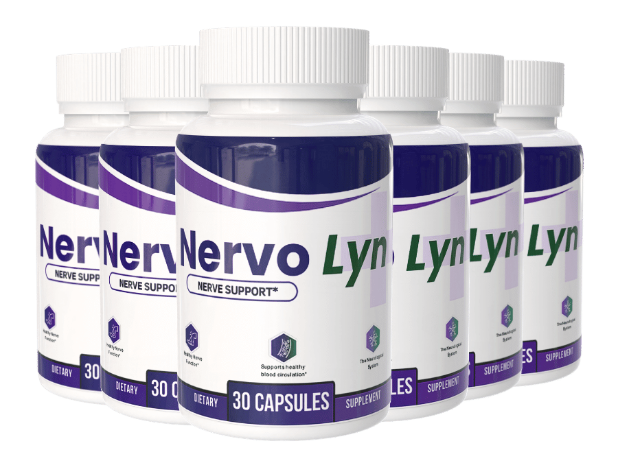

What Is Nervo Lyn And How Does It Work?
Your feet are the last stop on your circulatory system. That is not a small anatomical detail — it is the entire reason the trouble almost always starts down there and works its way up.
Here is the part most people never get explained to them. A nerve behaves like a wire, and the blood running through the tiny vessels alongside it is what keeps that wire's coating intact. When circulation to the smallest vessels drops off — the ones feeding your toes and fingertips, farthest from the pump — the wire starts fraying at the far end first. The signal still travels. It just leaks along the way. What leaks out is what you feel: the burning at 3 a.m., the pins and needles, the sense that there is a thin film wrapped around your soles that you cannot peel off.
Call it nerve starvation. The nerve is not broken. It is underfed.
Nervo Lyn is a once-daily capsule built around that idea. Rather than numbing the signal the way a prescription does, it targets the supply line — circulation to the fine vessels, and the nutrients those nerves draw on to maintain themselves.
That distinction matters for what you should expect. This is not a switch. The manufacturer reports first changes somewhere in the three-to-four week range, with fuller results between eight and twelve weeks, which lines up with how slowly nerve tissue does anything. A full protocol runs 90 to 180 days.
It is one capsule. Taken with water. That is the entire ask.
Nervo Lyn Ingredients
Six ingredients, and each one is doing a specific job on the starvation problem rather than padding a label.
- Magnesium Glycinate (80mg): The glycinate form is chosen deliberately — it absorbs where cheaper magnesium oxide largely passes through. Magnesium governs how readily a nerve fires, which is why deficiency shows up as twitching, cramping and that wired feeling at night.
- Alpha-Lipoic Acid: The most studied compound in this entire category for nerve comfort, and the reason it appears in nearly every serious formula. It works in both water and fat, which lets it reach the nerve sheath itself rather than just the bloodstream around it.
- Butcher's Broom (Ruscus aculeatus): A circulatory specific. It acts on venous tone — the ability of small vessels to push blood back up out of the legs and feet instead of letting it pool there. This is the ingredient aimed squarely at the supply line.
- L-Carnitine: Shuttles fatty acids into the mitochondria, where nerve cells generate the energy they need to repair their own insulation. Nerves are metabolically expensive tissue; starve the fuel and repair stops.
- Curcumin (Turmeric 95%): Standardized to 95% curcuminoids, not raw turmeric powder. Targets the low-grade inflammation that keeps irritated nerves irritated.
- Coenzyme Q10: Works alongside L-Carnitine on the energy side, and levels drop measurably with age — which is precisely when this problem tends to arrive.
Read together, the formula is coherent: two ingredients on circulation, two on cellular energy, one on nerve excitability, one on inflammation. Nothing here is a filler chosen to lengthen the label.
Nervo Lyn Side Effects
There is nothing in this bottle your body has not been working with your entire life.
That is the honest answer, and it comes straight from the ingredient list. A mineral, an amino acid, a root extract, a spice compound, an antioxidant your own cells produce. These are nutrients the body already recognizes, supplied at supportive amounts — not engineered compounds designed to override a signal or shut a pathway down. Formulas built that way tend to come with a list of tradeoffs. This one is not built that way.
That shows up in the record. Across a growing base of users taking Nervo Lyn as directed, there is no widespread pattern of adverse reports — which is what you would expect from a once-daily capsule of well-tolerated nutrients rather than a pharmaceutical.
Production backs it up. Nervo Lyn is manufactured in FDA-registered, GMP-compliant facilities under documented quality controls, screened for purity and free of unnecessary additives and fillers. Consistency of what is actually in each capsule is its own kind of safety.
As with any dietary supplement, if you have an existing medical condition or take prescription medication, check with your healthcare professional before starting.
Nervo Lyn Dosage
One capsule. Once a day. With water. There is no schedule to memorize and no second dose to forget.
Each bottle holds 30 capsules — a clean 30-day supply, which makes it easy to tell at a glance whether you have actually been consistent or have been skipping days without noticing.
Consistency is the whole game here, more than with most supplements. Nerve tissue rebuilds slowly and only under steady conditions. Taking it at the same time each day — most people attach it to breakfast so it rides an existing habit — keeps levels level. Two weeks on and one week off does not produce a slower version of the result. It largely produces no result.
Which is why the manufacturer frames the real protocol as 90 to 180 days, not 30. The multi-bottle options on the official site exist for that reason: they cover a full protocol without a monthly reorder, and they work out cheaper per bottle. Everything is a one-time purchase — there is no subscription and no automatic recharge.
Do not exceed one capsule daily. More does not accelerate anything.
Nervo Lyn – Refund Policy
A 60-day, no-questions-asked money-back guarantee covers every order.
Read that against the timeline and something becomes clear. The manufacturer says results begin at three to four weeks. The guarantee runs sixty days — they have deliberately given you the entire window in which the product either works or does not, and then a second month on top of it to decide. A company expecting a wave of refunds does not structure a guarantee to overlap so completely with the moment of truth.
Full terms are available on the official website.
Nervo Lyn Customer Reviews
 Dorothy Sullivan
Columbus, OH
Verified Purchase – 6 Bottles
Dorothy Sullivan
Columbus, OH
Verified Purchase – 6 Bottles
"I stopped hosting Thanksgiving three years ago and told everyone it was because of the drive. That was a lie. The truth is I couldn't stand at a counter long enough to finish a pie crust without the burning starting in both feet. My daughter took it over and I sat. This past year I did it again, start to finish, in my own kitchen. I'm not going to tell you the burning is gone entirely. I'm telling you I made the pie."
"For about two years it felt like I was walking on pebbles that nobody else could see, and I had that thing where it's like wearing a thick sock even barefoot. What actually got to me wasn't the pain. It was my grandson holding my hand crossing a parking lot, at seventy-one, because my balance was shot and we both knew it. Around week five I noticed I was going down the porch steps without reaching for the rail. My wife noticed before I did."
 Margaret Higgins
Denver, CO
Verified Purchase – 6 Bottles
Margaret Higgins
Denver, CO
Verified Purchase – 6 Bottles
"The 3 a.m. wake-ups were what broke me down. Electric shocks up through the arch, three or four nights a week, and by morning I was too wrung out to want to see anybody. I turned down my own book club for eight months straight. I'm on month four now. Last week I slept through five nights out of seven. Five out of seven doesn't sound like a headline. To me it was the first stretch in two years where I felt like myself in the morning."
Nervo Lyn – Where To Buy
One thing here costs people their guarantee, and it is worth being blunt about it.
Nervo Lyn is not sold through Amazon, eBay, or Walmart. Bottles do occasionally surface on those platforms, and they look right. What you cannot verify from a marketplace listing is what is actually in them, how they were stored, or how long they sat somewhere warm before shipping — and with a formula whose active compounds degrade, that is not a trivial unknown.
The larger issue is the one nobody thinks about until it matters. The 60-day guarantee covers orders placed on the official site, and only those. Customer support works from the same records. A third-party order is invisible to the manufacturer: nothing to look up, nothing to send back.
Ordering direct is what keeps all of it attached: the genuine formula, the stated manufacturing standards, and support and refund protection tied to your order.
Before you complete a purchase, check that you are actually on the official Nervo Lyn site.
To ensure you're getting the authentic product, most users choose to visit the official website directly.
Is Nervo Lyn A Scam?
No — and the reason has less to do with the marketing than with what the formula does not do.
A scam formula in this category is easy to spot: it leans on one cheap ingredient, promises relief in days, and makes the timeline vague enough to never be wrong. Nervo Lyn does the opposite. It names a slow window, three to four weeks to first changes and eight to twelve for the rest, which is an inconvenient thing to promise if your goal is a fast sale. Six ingredients, each with a defined role against nerve starvation, manufactured under FDA-registered and GMP-compliant standards, sold as a one-time purchase with no subscription trap.
The 60-day guarantee sits on top of that, and it overlaps the entire period in which you would find out either way.
Now the honest limits. This will not be right for everyone. Nerve discomfort has a dozen underlying causes, and a circulation-and-nutrient formula reaches some of them and not others. If your situation calls for a medical workup, get one — that is worth more than two months of any supplement.
But if you have been quietly rearranging your life around your feet — skipping the walk, choosing the chair, turning down the invitation — and you have been told the options are a prescription or nothing, then the maths is not complicated. Sixty guaranteed days. If nothing shifts, you ask for the money back and the only cost was the waiting.
As with any dietary supplement, check with a healthcare professional before starting if you have an existing condition or take prescription medication.
For those who want to verify product details or check current availability, the official Nervo Lyn website remains the safest and most reliable option.
